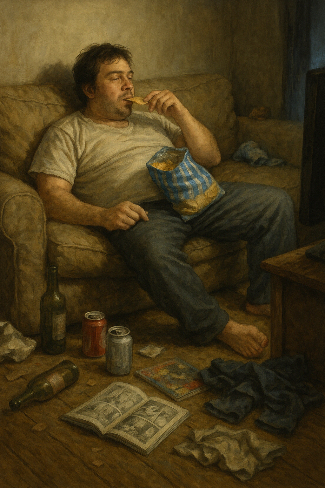

注意したい落とし穴
不幸を呼び込みやすい行動や考え方
同じ毎日でも、心の焦点の当て方しだいで満足度は大きく変わります。 下のチェックリストで「不幸を招きやすい習慣」を客観視して、少しずつ手放していきましょう。

挿絵：惰性の積み重ねは、心の疲れを見えにくくします。
❌ 不幸につながる行動・考え方
1
足りないことばかりに目を向ける
あるものより、ないものばかりに注目する。
他人と比べて「自分は劣っている」と感じる。
➡ 常に不足感が心を占め、満足を得にくくなります。
2
感謝を忘れる
誰かの親切や日常の恵みを当然のことと思う。
「ありがとう」を言わない。
➡ 人間関係がぎくしゃくし、孤独感を招きやすくなります。
3
小さなことを楽しめない
「大きな成功」「特別な出来事」だけを追い求める。
日常のささやかな幸せを軽んじる。
➡ 幸せのチャンスを見逃し、心が満たされません。
4
怒りや不満を抱え込み続ける
小さなストレスを発散せず、心にためる。
他人を責めたり、恨みを持ち続ける。
➡ 心が疲弊し、自己破壊的な行動につながることも。
5
怠惰・無関心
やるべきことを先延ばしにして自分を追い詰める。
健康や人間関係を大事にしない。
➡ 後悔や罪悪感を積み重ねてしまいます。
📖 聖書や哲学から見ても
聖書
は「不平を言う者や貪欲な者は満ち足りることがない」と警告しています。
セネカ
は「欲望を抑えず、他人と自分を比べ続ける人は、いくら持っても不幸だ」と説きました。
✅ まとめ
・
幸福
→ 小さな喜びを意識的に味わう
・
不幸
→ 不足や不満を意識的に数える
つまり、同じ日常でも
「どこに心の焦点を当てるか」
で幸福と不幸の分かれ目が決まります。